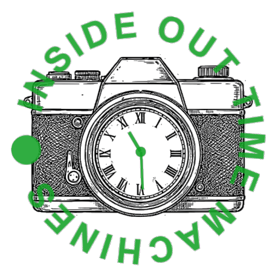

Jottem voor historische verenigingen, erfgoedhuizen en archieforganisaties
In elk huis liggen schoenendozen met foto's. In elk hoofd zitten herinneringen die nergens zijn opgeschreven. Uw organisatie bewaart de geschiedenis van uw stad of streek - maar het materiaal en de verhalen van inwoners zelf blijven vaak buiten beeld, of versnipperen op Facebook en WhatsApp tot ze verdwijnen.
Jottem (iotm.nl) is een platform waarmee uw organisatie inwoners uitnodigt om mee te doen: foto's, menukaarten, advertenties, documenten en herinneringen delen, en kennis toevoegen aan wat er al is. U bepaalt het onderwerp, de gemeenschap vult het aan - en alles wordt netjes bewaard, vindbaar en deelbaar.
Hiermee draagt u bij aan hosting, onderhoud en doorontwikkeling van het gezamenlijke platform.
Het platform doet het werk, maar de gemeenschap komt via u. Roep uw achterban op om materiaal te uploaden en verhalen toe te voegen: via uw nieuwsbrief, lokale media, een verzameldag of scansessie. Een actief project begint met een goede oproep.
Eén of meer vrijwilligers of medewerkers beoordelen nieuwe bijdragen vóór publicatie. Reken op een paar uur per week bij een lopend project.
Auteursrecht. Niet alles wat mensen insturen mag zomaar online: op een krantenknipsel of professionele foto rust vaak auteursrecht van een ander. De moderator controleert of de inzender het materiaal echt mag delen - zo voorkomt u claims en houdt u de collectie betrouwbaar.
Privacy. Recente foto's met herkenbare personen mogen alleen gepubliceerd worden met hun toestemming. Het platform helpt: elke upload wordt automatisch gecontroleerd op herkenbare personen en de uploader wordt om een toestemmingsverklaring gevraagd - maar de moderator neemt de beslissing. Zo gaat u zorgvuldig om met de privacy van uw inwoners.
Kwaliteit. De moderator bewaakt ook het onderscheid tussen persoonlijke herinneringen en historisch verifieerbare feiten - beide waardevol, maar duidelijk herkenbaar voor de bezoeker.
Kortom: moderatie is geen bijzaak, maar dé manier waarop uw organisatie kwaliteit, rechtmatigheid en vertrouwen garandeert. Een praktische handreiking voor moderatoren ligt klaar.
Erfgoed van iedereen, door iedereen. Uw kennis van de lokale geschiedenis, het materiaal en de verhalen van uw inwoners, en een platform dat alles netjes regelt: samen maakt dat geschiedenis die leeft - en bewaard blijft.
Meer weten of aansluiten? Kijk op iotm.nl!

Jottem (iotm.nl) is een initiatief van Inside Out Time Machines (IOTM), voortgekomen uit de tijdmachines van Amsterdam, Utrecht, Hilversum en Gouda, ondersteund vanuit de Subsidieregeling Uitvoeringsagenda Faro.